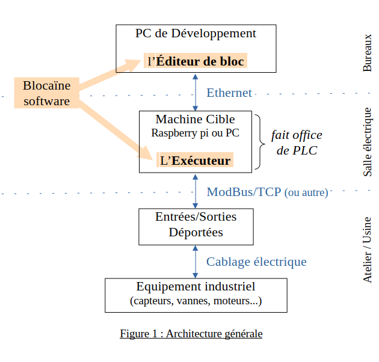

Pourquoi utiliser un automate programmable alors que l’on dispose d’entrées/sorties déportées ?
Blocaine vous permet de concevoir des programmes d'automatisme de manière intuitive en chaînant des blocs fonctionnels, puis de les déployer sur Raspberry Pi ou PC.

Blocaïne sépare la conception du programme de son exécution
Pc de développement
Éditeur de bloc
Création de programmes par chaînage de blocs fonctionnels.
Compilation.
Chargement de programmes dans la Machine Cibe.
Visualisation des variables en temps réel.
Forçage des variables.
Machine Cible (faisant office de PLC).
Exécuteur
Exécution les programmes créés avec l’Éditeur de bloc.
Pilotage de l’équipement industriel via des entrées/sorties déportées.
Communication avec un éventuel IHM/SCADA via OPC UA.
Une nouvelle version d'un programme peut être chargée à la volée, donc sans arrêter l'installation
Édition
- Programmation graphique sous forme de blocs fonctionnels chaînés
- L’ordre d’exécution des blocs est généré automatiquement
- La mise en page est automatique
Bit de validité
Chaque variable possède nativement un bit de validité, qui se propage de bloc en bloc
Python
- Typage dynamique des variables
- Écriture possible de blocs fonctionnels en Python
Débogage
- Simulateur de cible (faisant office de PLC)
- Visualisation en temps réel des variables
- Forçage des variables
Connectivité
- Un serveur web, permet la visualisation de l'état de la cible
- Un serveur OPC UA, permet l'interfacage avec un IHM/SCADA
- Un client ModBus, permet le pilotage de remotes I/O
open source
Blocaïne est libre de droits et en sources ouvertes
Fiche technique
Avantages
Philosophie
KISS - Keep It Simple Stupid
Fonctionnalités avancées
"Chargement à chaud", bit de validité, typage dynamique...
Coût
low cost (matériel & logiciel)
Licence
Libre et open source. Le code est intégralement disponible et modifiable.
Pérennité
Mimimise l'obsolescence grâce à des standards pérennes (Python, Ethernet, PC)
Limitations
Ressources CPU
Pas adapté aux gros projets gourmands en CPU — un bloc « System » de base s'exécute en ~2 µs sur Raspberry Pi 5 (max ~0,5 M blocs/s).
Temps réel
Pas de système temps réel « dur » — la latence restant sous 1 ms sur Raspberry Pi 5.
Bibliothèque
Certains blocs « System » attendus peuvent encore manquer.
Avancement du projet
La version "Béta" de Blocaïne est disponible sur github, afin de faciliter son installation dans un but d'évaluation, la version téléchargeable est configurée pour que:
l'Éditeur de bloc et l'Exécuteur s'exécutent sur le même PC, ce qui élimine toute configuration réseau
Certaines fonctionnalités sont déactivées (OPC, GPIO, MudBus/TCP), ce qui élimine toute installation de modules Python spécifiques
Il ne faut que 3 minutes pour télécharger et commencer à utiliser Blocaïne.
Après le téléchargement, il faudra simplement lancer l'Exécuteur puis l'Éditeur de bloc, la connection entre les deux est automatique, vous pourez alors commencer à évaluer Blocaïne.
add additionand ET logiqueappend ajout un élément en fin de listcablin ajoute un élément à une structurecablout extrait un élément à une structureclock horlogecomp comparaisonconst.pi constante pidelay retard à la montée ou à la descentedifferencial différencieldiv divisiondt temps de cycle de la tâcheedge détection de front montant et/ou descendantfilter_FO filtre du 1er ordregeti retourne l'élément [n]GPIO_DI lecture d'une entrée digitale GPIOGPIO_DO écriture d'une sortie digitale GPIOGPIO_PWM écriture d'une sortie MLI GPIOhold fonction maintieninformation retourne les infos d'une variableinput entrée d'un blocinput_output accéde à une sortie d'un autre processinsert insert un élément dans une listintegrator intégrateur en fonction du tempslen retourne le nombre d'élémentslimit limitations haute et bassememory mémoire (bascule RS)minmax minimum et maximummodbus_conn ModBus/TCP connexionmodbus_read ModBus/TCP lecture des entréesmodbus_write ModBus/TCP affectation des sortiesmult multiplicationnot NON logiqueOPC_node création d'un noeud OPC UAOPC_read lecture d'une variable OPC UAOPC_server configuration d'un serveur OPC UAOPC_var création d'une variable OPC UAOPC_write affectation d'une variable OPC UAor OU logiqueoutput sortie d'un blocpop suprime un élément d'une listprevious variable mémoriséeputi affecte un élément d'une listrange itération pour bouclereadbit lit un bit d'un entierselect selection (if/then/else)sub soustractiontime lecture horloge systemtype conversion de typevalidRead lecture du bit de validitévalidWrite écriture du bit de validitéwritebit affecte un bit d'un entier